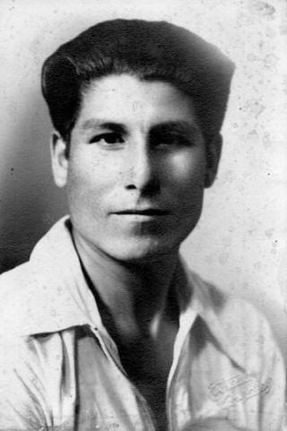

25 setiembre 2023
Luis Ccosi Salas
Luis Ccosi Salas, un gran colaborador de Julio C. Tello.
"Luis Ccosi Salas, un gran colaborador de Julio C. Tello" de Arqueología - Jovelos
Luís Ccosi Salas, de origen puneño nació el año 1910, pasando sus primeros años en Mañazo, Puno. Posteriormente viajo a Lima donde siguió sus estudios de primaria y secundaria.
Ingresó a la Escuela Nacional de Artes y Oficios de Lima, siguiendo estudios de escultura en el Departamento de Bellas Artes con el maestro Artemio Ocaña Bejarano, uno de los más brillantes escultores de nuestra patria, autor entre otras obras del monumento a los Caídos de la Guerra de 1941 del Campo de Marte, galardonado en Nápoles - Italia como el más hermoso monumento de la humanidad.
De 1936 a 1939 siguió estudios de Arte Pre-colombino en el Museo Rafael Larco Herrera de Chiclín, Trujillo.
Entre 1942 y 1944 siguió cursos de perfeccionamiento de Dibujo bajo la dirección de los maestros José Sabogal y Suárez Vértiz en la escuela Nacional de Bellas Artes de Lima.
Luís Ccosi junto a Julio C. Tello de quien fue cercano colaborador y aprendió el amor por las culturas del antiguo Perú entre los años 1940 y 1947. Dejó una vasta obra de dibujos y esculturas, falleciendo el año 2003 a los 93 años.
Peruko Ccopacatty
Nacido en 1947 en la ciudad de Moho (Huancané, Puno).Peruko Ccopacatty es un escultor egresado de la Ensabap.
Peruko Ccopacatty es un escultor egresado de la Escuela Nacional Superior Autónoma de Bellas Artes del Perú (Ensabap) a principios de la década de 1980 emigró a los Estados Unidos, donde ha realizado una incansable labor de producción escultórica y mural especialmente en espacios públicos. Reconocida por instituciones públicas y privadas de su país de residencia, e incluso por la misma Organización de las Naciones Unidas, su obra ha pasado injustamente inadvertida en el Perú. Este artículo describe su proceso a la luz de las escasas fuentes disponibles y a partir de la exposición homenaje, realizada en mayo y junio del 2019 en el Centro Cultural de Bellas Artes como parte de las actividades de conmemoración del Centenario de la Ensabap. Se revisan su estilo, su simbolismo y su trayectoria, y se proponen líneas de investigación hacia el rescate de un corpus disperso y el reconocimiento de su sorprendente trayectoria.
Palabras clave: tradición aymara, arte en espacios públicos, Ensabap, escultura en metal, multiculturalidad, muralismo, Pedro Peruko Ccopacatty.
Humareda
Humareda nació en Lampa, el 6 de marzo de 1920.
Humareda nació en Lampa, el 6 de marzo de 1920. Sus padres fueron Emilio Humareda Caballero y Eudocia Gallegos Andía. A los cuatro años de edad perdió a su padre, quien al parecer fue víctima de un crimen pasional. En 1927 inició sus estudios escolares en la escuela fiscal de su pueblo natal, pero los abandonó en el tercer año de secundaria, para dedicarse a la enseñanza. Ya por entonces soñaba con ir a Lima para estudiar dibujo y pintura.
En 1939 fugó de su hogar y marchó a Arequipa. Poco después pasó a Lima, donde se hospedó en casa de sus tíos abuelos y logró ingresar a la Escuela Nacional de Bellas Artes de Lima. Sin embargo, luego de unos meses de estudio las necesidades económicas le apremiaron. Debió trabajar y estudiar al mismo tiempo, por lo que al regresar a la casa de su tía abuela llegaba con el cuerpo molido. Por las mañanas caminaba por la calle Capón, deteniéndose en los restaurantes, ofreciendo pintar rostros a pedido del cliente; por ellos recibía unos cuantos soles que le servían para comprar lápices de carboncillo y alimentarse en el restaurante limeño Cordano. Dejó de estudiar un año, pero en 1941 reingresó a la Escuela de Bellas Artes, dirigida entonces por José Sabogal. Tuvo por maestros a destacados pintores como Julia Codesido, Ricardo Grau y Juan Manuel Ugarte Elespuru. Al ingresar en 1947 ocupó el segundo lugar en su promoción y ganó una beca a la Argentina, pero por motivos de salud lo postergó. Volvió a su tierra natal, donde se dedicó a pintar paisajes.
En 1950 hizo al fin efectiva su beca a Buenos Aires, donde estudió en la Escuela Superior de Bellas Artes de la Nación Ernesto de la Cárcova. En 1952 retornó a Lima y en septiembre inauguró en el Instituto Cultural Peruano Argentino su primera exposición individual, compuesta por 19 óleos. Hasta 1956 presentó en total 21 exposiciones individuales, así como numerosas muestras colectivas.
En busca de mayores experiencias, en 1966 viajó a Europa, arribando sucesivamente a Barcelona y París, donde permaneció apenas un mes, prefiriendo retornar a su patria. En Lima continuó realizando exposiciones individuales (1966, 1967, 1968 y 1970).
Humareda era un pintor excéntrico, que no tomaba ni fumaba, un hombre tierno al que le gustaba la soledad, aunque sin perder nunca su buen humor. No tenía domicilio fijo; vivía en hostales de la La Parada en La Victoria, un barrio populoso plagado de delincuentes y meretrices, aunque también de ambulantes o trabajadores informales provenientes, como él, del interior del país.
En 1983 fue sometido a cirugía al detectársele un tumor en el cuello y al año siguiente le fueron extirpadas la laringe y las cuerdas vocales. Pese a ello, no flaqueó en su creación artística y expuso en la galería Moll de Miraflores ese mismo año. En julio de 1984, el alcalde de Lima Alfonso Barrantes le hizo entrega de la Medalla de la Ciudad y, en noviembre del mismo año, el grupo “Quaternario”, integrado por artistas puneños, le dedicó el segundo Salón de Arte Contemporáneo, exhibido en la galería municipal de Puno.
En octubre de 1986, en la galería del Centro Cultural de la Municipalidad de Miraflores fueron exhibidos 42 de sus óleos, realizados entre 1948 y 1986. La muestra se denominó “Homenaje a Víctor Humareda” y fue promovida por el pintor Eduardo Moll y el crítico Luis Lama.
El 16 de noviembre de 1986 Humareda empezó a pintar la que sería su última obra: La Quinta Heeren de noche, por encargo del Banco Central de Reserva. Lo terminó el día 18 y al día siguiente sufrió una hemorragia nasal, causada por las emanaciones de sus óleos. Falleció dos días después en el Instituto Nacional de Enfermedades Neoplásicas, recibiendo homenajes tanto en la Escuela Nacional de Bellas Artes como en el mismo Cementerio Presbítero Maestro, donde reposan sus restos.
Tupac Peralta
Nacido en Perú en los años 70, Tupac Peralta vive y desarrolla su trabajo musical en Ibiza...
Nacido en Perú en los años 70, Tupac Peralta vive y desarrolla su trabajo musical en Ibiza y desde la Isla, con actuaciones, composiciones y colaboraciones, tanto con grupos locales como internacionales. Con las raíces en los Andes, formación europea e influencia de músicos de jazz de talla mundial, como es el caso de Santana, Jerry González o Dave Valentín, con los cuales ha colaborado, este músico multi-instrumentista da a sus interpretaciones una fuerza y un estilo muy particulares dentro de géneros como el Latin, Jazz o Clásica. El repertorio de Tupac Peralta se basa en la ejecución de piezas conocidas internacionalmente y otras propias, trabajando diferentes formas y técnicas interpretativas de flautas del mundo.
Ernesto More Barrionuevo
Ernesto More Barrionuevo (1897-1980) fue poeta, periodista, traductor y político.
Ernesto More Barrionuevo (1897-1980) fue poeta, periodista, traductor y político. Tanto él como sus hermanos Federico y Gonzalo fueron grandes amigos del poeta César Vallejo. Junto con él editó los semanarios políticos-humorísticos El Hombre de la Calle y Cascabel. Fue elegido diputado en Puno y miembro fundador y presidente del Movimiento Peruano de la Paz y del Instituto de Lenguas Aborígenes. En 1952, Francia le otorgó la condecoración con las Palmas Académicas y luego, en 1968, fue incorporado como “Miembro de la Societé des Gens de Lettres de París”. Dedica sus últimos años a la docencia en la Universidad Ricardo Palma.